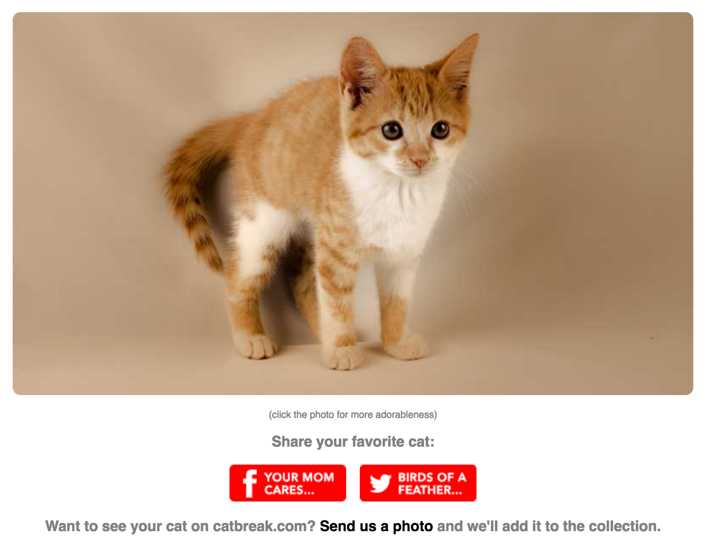
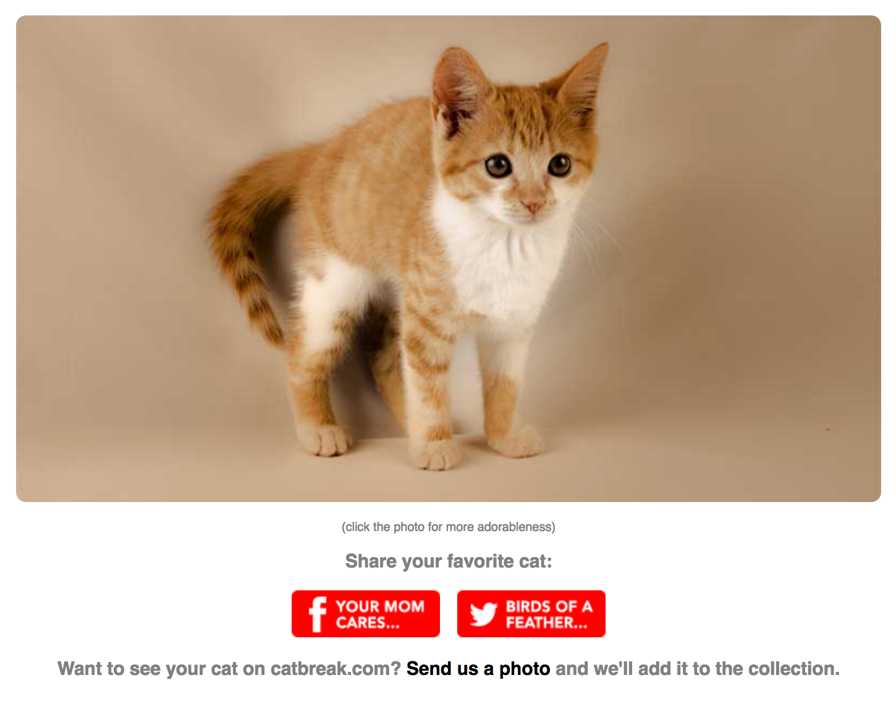

2016
This was a take home test as part of the interview process for the company I worked for until April 2017. The goal was to build a network map using the Google Maps API, and to access it using only my own code (no jQuery plugins). Needed to drop a pin in the the various data server point-of-presences (POPs), draw lines to connect them, and calculate and display their distances. When the user inputs a client address and selects a destination server, a pin should appear at the client address, with a line between it and the nearest server. The program should then calculate the shortest distance between that server and the final destination server and draw a path through the relevant connected servers. Implemented Dijkstra shortest distance algorithm. Click on map to try it out.

2015
First foray into javascript and requestAnimationFrame land. A simple javascript/html game completed in Phase 0 of Dev Bootcamp. First attempt at collision detection. Originally had it so the cheese moved as well, but resulted in choppy, unrealistic movement. Canvas resizes dynamically. Click image to play.

2015
My brother's idea. A mobile-friendly Rails & jQuery app with the idea to incorporate Google Adsense at some point. Clicking on the cat image brings up a new random cat pic, and users can share via Facebook or Twitter an image of their favorite cat. Most challenging part was hacking around Facebook's Share functionality. It typically only allows you to share a single image for a given website, but we wanted users to be able to share an image of their favorite particular cat. Got it to work after some tinkering. Rails, Javascript, jQuery, HTML, CSS. Click image to go to site.
 
